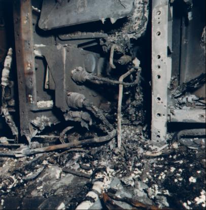

For almost a year, the Grissom crew had watched its craft go through the production line, test program, and launch pad preparations. After participating in a multitude of critiques, reading numerous discrepancy reports, and going through several suited trials in the spacecraft in altitude chambers at Downey and the Cape, Grissom's group had learned almost all the idiosyncrasies of spacecraft 012. The astronauts knew, if not every nut and bolt, at least the functions of its 88 subsystems and the proper positions for hundreds of switches and controls inside the cockpit. They also knew that the environmental unit had been causing trouble. Indeed, Grissom's first reports on entering the cabin were of a peculiar odor - like sour milk.* 3
As all traces of sea-level atmosphere were removed from the suit circuit and spacecraft cabin, pure oxygen at a pressure of 11.5 newtons per square centimeter (16.7 pounds per square inch) was substituted. The crew checked lists, listened to the countdown, and complained about communications problems** that caused intermittent delays. The men could speak over four channels, either by radio or telephone line, but the tie - in with the test conductors and the monitors was complicated and troublesome. Somewhere there was an unattended live microphone that could not be tracked down and turned off. Other systems, Grissom's crew noted, seemed to be operating normally. At four in the afternoon, one shift of technicians departed and another came on duty.
Near sunset, early on this winter evening, communications problems again caused a delay, this time for ten minutes, before the plugs could be pulled. Thus, the test that should have been finished had not really started, and an emergency egress practice was still to come. The crew was accustomed to waiting, however, having spent similar long hours in trouble-plagued training simulators. About 6:30, Grissom may have been thinking about the jest he had played on Riley McCafferty by hanging a lemon on the trainer.4
Donald Slayton sat half a kilometer away at a console in the blockhouse next to Stuart Roosa, the capsule communicator.*** On the first floor of the launch complex, Gary W. Propst, an RCA employee, watched a television monitor that had its transmitting camera trained on the window of the command module. Clarence A. Chauvin, the Kennedy Space Center test conductor, waited in the automated checkout equipment room of the operations building, and Darrell O. Gain, the North American test conductor, sat next door. NASA quality control inspector Henry H. Rogers boarded the Pad 34 elevator to ride up to the clean room. There, at the moment, were three North American employees: Donald O. Babbitt, pad leader; James D. Gleaves, mechanical technician; and L. D. Reece, systems technician. Reece was waiting to pull the plugs on signal. Just outside on the swing arm, Steven B. Clemmons and Jerry W. Hawkins were listening for Reece to call them to come and help. All of these men and several others in the vicinity at 6:31 heard a cry over the radio circuit from inside the capsule: "There is a fire in here."5
Stunned, pad leader Babbitt looked up from his desk and shouted to Gleaves: "Get them out of there!" As Babbitt spun to reach a squawk box to notify the blockhouse, a sheet of flame flashed from the spacecraft. Then he was hurled toward the door by a concussion. In an instant of terror, Babbitt, Gleaves, Reece, and Clemmons fled. In seconds they rushed back, and Reece and Clemmons searched the area for gas masks and for fire extinguishers to fight little patches of flame. All four men, choking and gasping in dense smoke, ran in and out of the enclosure, attempting to remove the spacecraft's hatches.
Meanwhile, Propst's television picture showed a bright glow inside the spacecraft, followed by flames flaring around the window. For about three minutes, he recalled, the flames increased steadily. Before the room housing the spacecraft filled with smoke, Propst watched with horror as silver-clad arms behind the window fumbled for the hatch. "Blow the hatch, why don't they blow the hatch?" he cried. He did not know until later that the hatch could not be opened explosively.**** Elsewhere, Slayton and Roosa watched a television monitor, aghast, as smoke and fire billowed up. Roosa tried and tried to break the communications barrier with the spacecraft, and Slayton shouted furiously for the two physicians in the blockhouse to hurry to the pad.6
In the clean room, despite the intense heat, Babbitt, Gleaves, Reese, Hawkins, and Clemmons, now joined by Rogers, continued to fight the flames. From time to time, one or another would have to leave to gasp for air. One by one, they removed the booster cover cap and the outer and inner hatches - prying out the last one five and a half minutes after the alarm sounded. By now, several more workers had joined the rescue attempt. At first no one could see the astronauts through the smoke, only feel them. There were no signs of life. By the time firemen arrived five minutes later, the air had cleared enough to disclose the bodies. Chaffee was still strapped in his couch, but Grissom and White were so intertwined below the hatch sill that it was hard to tell which was which. Fourteen minutes after the first outcry of fire, physicians G. Fred Kelly and Alan C. Harter reached the smoldering clean room. The doctors had difficulty removing the bodies because the spacesuits had fused with molten nylon inside the spacecraft.

The environmental control system's instrumentation harness after the command module 012 fire that took the lives of Grissom, White, and Chaffee on 27 January 1967.
As anguished officials gathered, the pad was cleared of unnecessary personnel, guards were posted, and official photographers were summoned. All through the night, physicians labored to complete their grim task. After the autopsies were finished, the coroner reported that the deaths were accidental, resulting from asphyxiation caused by inhalation of toxic gases. The crew did have second and third degree burns, but these were not severe enough to have caused the deaths.7
Most persons who had been connected with the space program in any way remember that the tragedy caught them by surprise. In six years of operation, 19 Americans had flown in space (7 of them, including Grissom, twice) without serious injury. Procedures and precautions had been designed to foresee and prevent hazards; now it was demoralizing to realize the limits of human foresight. Several other astronauts had died, but none in duties directly associated with space flight. Airplane crashes had claimed the lives of Elliot See, Charles Bassett, and Theodore Freeman. These were traumatic experiences, but the loss of three men during a ground test for the first manned Apollo flight was a more grievous blow.
Memorial services for the AS-204 crewmen were held in Houston on 30 January, although their bodies had been flown north from Kennedy for burial. Grissom and Chaffee were buried in Arlington National Cemetery and White at the Military Academy at West Point. Amid these last rites, a similar tragedy took the lives of two men in an oxygen-filled chamber at Brooks Air Force Base in San Antonio. Airman 2/c William F. Bartley and Airman 3/c Richard G. Harmon were drawing blood samples from rabbits when a fire suddenly swept through the enclosure. The spacecraft and chamber tragedies pinpointed the dangers inherent in advanced space-simulation work.8
The accident that took the lives of Grissom, White, and Chaffee was heartrending, and some still insist totally unnecessary; but NASA had always feared that, in manned space flight, danger to pilots could increase with each succeeding program. Space flight officials had warned against undue optimism for years, pointing out that any program that large inevitably took its toll of lives - from accident, overwork, or illness brought on by the pressures of such an undertaking. Man was fallible; and a host of editorial cartoons reiterated this axiom for several months after the fire. One, by Paul Conrad in the Los Angeles Times, showed the spectre of death clothed in a spacesuit holding a Mercury spacecraft in one hand, a Gemini in the other, and with the smoldering Apollo in the background. It was captioned, "I thought you knew, I've been aboard on every flight."9
While preaching the need to promote quality workmanship, NASA managers had relied on their contractors to invoke effective measures. NASA executives knew they had tried to inspire the whole Apollo team to strive for perfection, but the haunting question now was: Had they tried hard enough? Every company and organization had a management scheme to increase personal motivation by giving recognition to faultless performance. North American had its "PRIDE" program, standing for "Personal Responsibility in Daily Effort," and NASA had "MFA" for "Manned Flight Awareness." The NASA program also featured what was called the "Lunar Roll of Honor"; the first lunar landing party would carry a microfilm listing 300,000 names, honoring the exceptional service of those who had aided significantly in the achievement. After the fire, the idea was dropped. Just as it became obvious how difficult it was to fix the blame for failure, it would later be come apparent that it would be equally hard to pinpoint responsibility for success.10
In Washington on the day of the accident, an Apollo Executives' Conference was in session, attended by NASA leaders James Webb, Robert Seamans, and George Mueller and by top Gemini and Apollo corporate officials, to mark the transition from two- to three-man space flight operations. That morning the conferees had been invited to the White House to witness the signing of a space treaty. President Johnson described this event as the "first firm step toward keeping outer space free forever from the implements of war." Later, as the tragic news from Pad 34 spread, the executives considered disbanding. Administrator Webb, however, decided to carry on; Mueller would stay in Washington and Seamans and Samuel Phillips would go to the Cape. The next day, Mueller reported the first few meager facts to the meeting and then gave a paper that Phillips had intended to present. Ironically, Phillips had listed troubles with quality assurance among the top ten problems faced in Apollo.11
* More than a week earlier, in an altitude chamber test at the Cape, the crewmen had complained that their eyes had smarted when they plugged the suit circuit into the environmental control unit.
** Earlier in January, Douglas Broome of the Apollo office in Houston had recommended using heavier wire in the communications systems. The size North American had installed in spacecraft 012, he said, was too flimsy and too subject to damage.
*** Both Slayton and Joseph Shea had thought of joining the crew in the spacecraft to participate in the test so they could get more feel for actual operations. This was not an unusual procedure, but the time for the scheduled launch was too near. Instead, Shea had flown back to Houston, and Slayton had elected to sit with the CapCom and watch.
**** After the loss of Grissom's spacecraft in Mercury, when a faulty mechanism blew the hatch prematurely, Space Task Group designers had gone from an explosive to a mechanically operated hatch. This practice continued in Gemini and Apollo.
3. Ibid.; Maj. Gen. John G. Shinkle, KSC, to NASA Hq., Attn.: Dir. Apollo Prog., "Your Request for Results of CSM 012 Altitude Chamber Testing," 19 Jan. 1967.
4. Douglas R. Broome, Jr., to Mgr., ASPO, "Communications Cables for Spacecraft 012 and Block II Spacecraft," 23 Jan. 1967; William J. Cromie, "Apollo's Crew Not Pleased with Craft," Houston Chronicle, 30 Jan. 1967; "Problem-Plagued Apollo Worried Grissom," Houston Post, 13 March 1967; Riley D. McCafferty, interview, Cocoa, Fla., 15 Nov. 1969.
5. RARB, append. B; "Apollo Tragedy Almost Claimed a Fourth," Washington Post, 12 Feb. 1967; "The Ten Desperate Minutes," special report in Life, 21 April 1967, pp. 113-14.
6. RARB, append. B, passim, but especially pp. B-39, B-59 through B-63, B-161; append. D, pp. D-12-24 to D-12-29.
7. Ibid., append. B, p. B-162, and D, pp. D-11-23, D-11-25.
8. Phil Casey, "Grissom and Chaffee Are Buried in Arlington, White at West Point," Washington Post, 1 Feb. 1967, pp. A-1, A-4; "Science and Space: Apollo's Final Seconds," Newsweek, 13 Feb. 1967; Thomas O'Toole, "Oxygen Fire Kills 2 At Space School," Washington Post, 1 Feb. 1967, A-1; William Hines, "Interpretation: 2 Oxygen-Fed Disasters Endanger Space Plans," Washington Evening Star, p. 1, 1 Feb. 1967.
9. Lee D. Saegesser, "Cartoons on Space: 1963-1968," NASA Historical Div., October 1968, unpaged.
10. Earl Blount, interview, Downey, Calif., 29 Jan. 1970; Albert M. Chop file on "Lunar Roll of Honor," consisting of correspondence from 27 July 1966 to 26 May 1967; George E. Mueller TWX to KSC, MSC, and MSFC, Attn.: Kurt H. Debus, Gilruth, and Wernher von Braun, ["Cancellation of Lunar Roll of Honor"], 14 May 1967.
11. Typescript of Gemini Apollo Executives joint meeting, Washington, 27-28 Jan. 1967 chart, "Apollo Program: Top Ten Problems (Jan. 1967)": funding, S-II deliveries, LH2 tank cracks, LM deliveries, Block II deliveries, S-IVB 503 failure, LM ascent engine overshoot, stress corrosion, quality assurance and personal errors, and program software saturation; Dept. of State, "Treaty on Principles Governing the Activities of States in the Exploration and Use of Outer Space, Including the Moon and Other Celestial Bodies," TIAS 6347, United States Treaties, 18: 2415; Astronautics and Aeronautics, 1967: Chronology on Science, Technology, and Policy, NASA SP-4008 (Washington, 1968), p. 23.